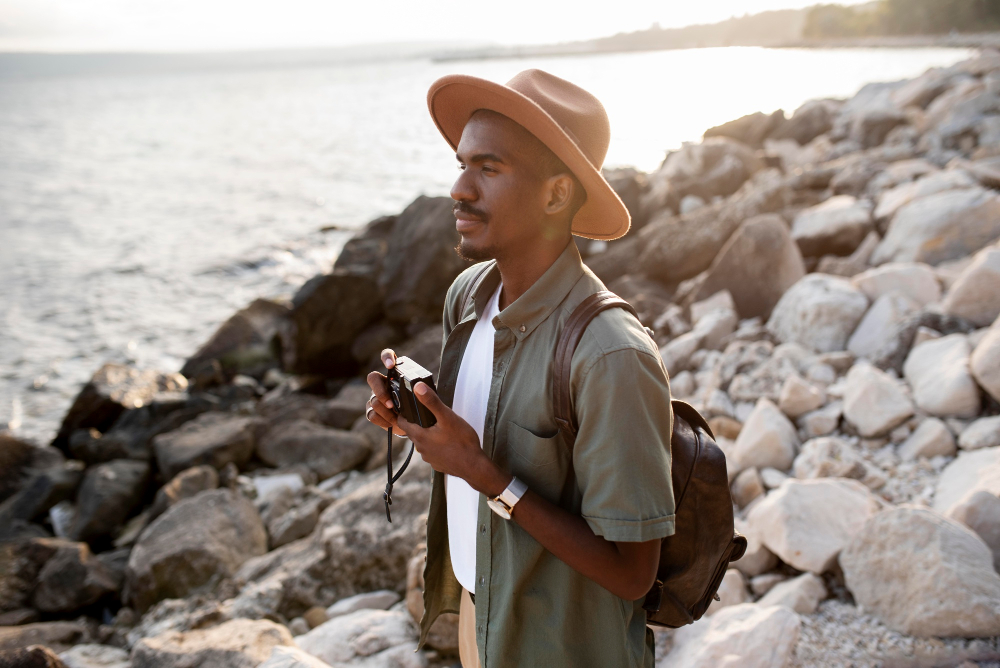
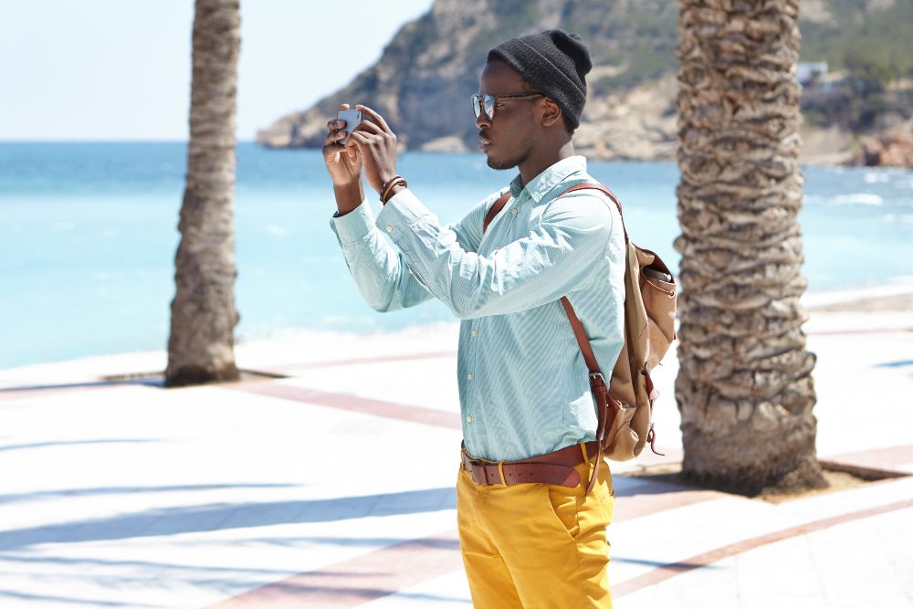
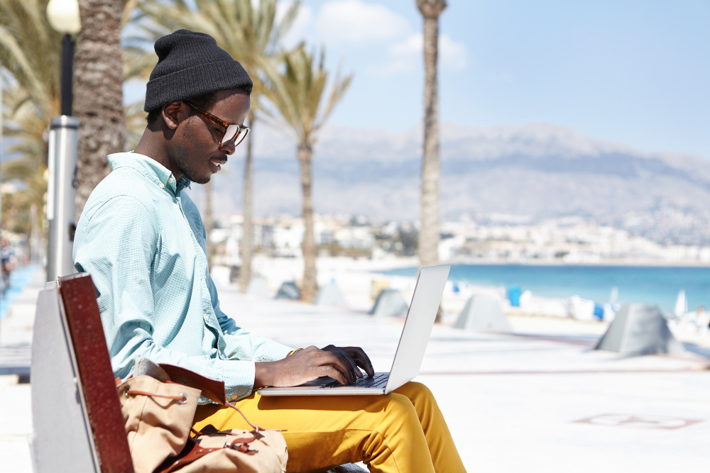

The Ultimate Guide to a Successful First Solo Travel
Embarking on your first solo travel adventure can be both exhilarating and daunting. The idea of exploring new places on your own, free from the constraints of familiar company, is a chance to discover yourself, learn about different cultures, and build unforgettable memories. However, to ensure that your experience is as enriching and safe as possible, careful planning and a positive mindset are essential. This guide will walk you through the steps and tips for a successful first solo journey. Preparation and Research The cornerstone of any successful solo trip is thorough preparation. Start by choosing a destination that aligns with your interests and comfort level. If this is your first time traveling alone, consider a country or city known for its safety and ease of navigation. Once you've selected your destination, invest time in researching the local culture, customs, and language. Understanding these aspects will help you avoid cultural faux pas and communicate more effectively with locals. Create a detailed itinerary that includes your flights, accommodations, and a list of places you want to visit. While spontaneity is a joy of solo travel, having a solid plan in place will give you peace of mind and structure, especially during the initial days when everything is new and overwhelming. Don't forget to research transportation options within your destination—knowing how to get from one place to another can save time and reduce stress. Packing Light and Smart When traveling solo, packing becomes even more critical because you rely entirely on your own ability to manage your belongings. The goal is to pack light but smart. Focus on versatile clothing that can be layered, and invest in quality travel gear that won’t break easily under the strain of constant movement. A sturdy backpack or suitcase, comfortable walking shoes, and a secure day bag for daily essentials are must-haves. Include a small first-aid kit, copies of important documents (such as your passport and travel insurance), and a portable charger to keep your electronic devices powered. By planning what to pack and keeping it to the essentials, you reduce the burden of managing too many items and maintain the freedom that solo travel promises. Staying Safe Safety should always be a top priority when traveling alone. Share your itinerary with a trusted friend or family member, and check in with them periodically. Consider downloading local emergency apps and mapping out the locations of nearby hospitals, police stations, and embassies. A blend of common sense and technology can go a long way in keeping you secure. In unfamiliar surroundings, stay aware of your environment. Avoid walking alone in poorly lit or isolated areas, especially at night. It’s wise to have a backup plan for transportation, like local taxi services or ridesharing apps, so you’re not left stranded. Trust your instincts; if a situation doesn’t feel right, don’t hesitate to remove yourself from it. Budgeting and Financial Planning One of the challenges of solo travel is managing your finances effectively. Before you leave, outline a budget that covers accommodation, food, transportation, and activities. It’s a good idea to set aside an emergency fund for unexpected expenses. Consider using a travel-friendly credit card or services like Payoneer and Wise to handle your money internationally without incurring hefty fees. Keep track of your spending daily, and adjust your budget as needed. Budgeting doesn’t have to be restrictive; it’s about ensuring you have the funds to enjoy your adventure without constant worry. A well-planned budget will help you avoid unnecessary stress and allow you to focus on the experiences ahead. Embracing the Solo Experience Traveling alone is an opportunity for self-discovery and personal growth. Without the distraction of familiar companions, you’re free to engage with locals, try new activities, and immerse yourself in the local culture. Join local tours, attend cultural events, or simply sit in a café and observe the world around you. Every interaction is a chance to learn something new about yourself and the world. Document your journey through journaling or photography. This not only helps preserve memories but also allows you to reflect on your experiences. Over time, you may find that the solitude offers a chance to reconnect with your inner self, fostering a sense of independence and confidence. Final Thoughts Your first solo travel experience is a significant milestone that can transform the way you see the world. While challenges are inevitable, preparation, a solid budget, and a focus on safety will help ensure that you overcome them gracefully. The journey may take you out of your comfort zone, but it will also open doors to unexpected friendships, self-growth, and a deeper appreciation for diverse cultures. By embracing the adventure with an open mind and a careful plan, you’ll not only navigate the practical aspects of travel but also savor the freedom that comes with exploring the world on your own terms. In the end, the success of your solo journey will be measured not by the absence of challenges but by your ability to learn, adapt, and thrive amidst them.